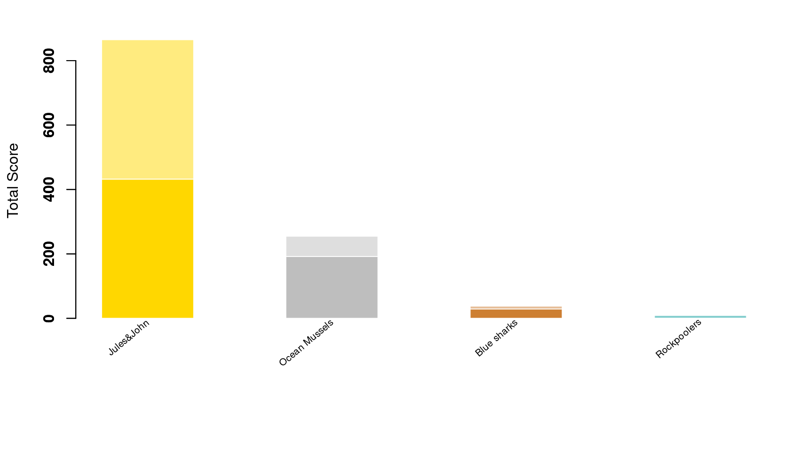

Content
You can view all the wildlife we recorded at this event on iNaturalist here.


| Records | 233 |
| Species | 88 |
| Verified species | 61 |
| Observers | 10 |
| Verified score | 1697 |
| Unverified score | 2763 |
| Top species | Prosthiostomum siphunculus |
| Top species score | 72 |
Congratulations to Jules&John for taking the gold medal in this BioBlitz Battle! And well done to everyone for a great game and some fantastic wildlife finds.

| Species | Potential Score | Confirmed Score | |
|---|---|---|---|
| John Hepburn | 39 | 646 | 341 |
| JulesA | 26 | 508 | 241 |
| kmuddiman | 32 | 325 | 237 |
| charlotterockpool | 21 | 255 | 192 |
| David Lyu | 18 | 508 | 190 |
| fanny_wright | 19 | 220 | 144 |
| Matt | 8 | 84 | 75 |
| jaspery | 4 | 38 | 29 |
| Chris | 2 | 17 | 9 |
| Marie Chilvers | 1 | 9 | 0 |
A total of 4 species with a rarity score of 33 or higher have verified records:


Community verified records only
Click any image to view the original photo and licence details on iNaturalist.
| Name | Rarity Score | |
|---|---|---|
| Botryllus schlosseri - Star Tunicate | 12 | |
| Morchellium argus - Colonial Seasquirt | 24 | |

|
Apletodon dentatus - Small-headed Clingfish | 30 |

|
Nerophis lumbriciformis - Worm Pipefish | 13 |

|
Tritia reticulata - Netted Dogwhelk | 13 |

|
Nucella lapillus - Atlantic Dogwhelk | 8 |

|
Littorina littorea - Common Periwinkle | 8 |

|
Littorina obtusata - Flat Periwinkle | 12 |

|
Patella pellucida - Blue-rayed Limpet | 13 |

|
Limacia clavigera - Orange-clubbed Sea Slug | 16 |

|
Berthella plumula - Side-gilled Seaslug | 17 |

|
Calliostoma zizyphinum - European Painted Top Shell | 12 |

|
Phorcus lineatus - Lined Top Shell | 10 |

|
Steromphala cineraria - Grey Topshell | 11 |

|
Venerida | 8 |

|
Magallana gigas - Pacific Oyster | 11 |

|
Pectinidae - Scallops | 10 |

|
Xantho hydrophilus - Montagu’s Crab | 9 |

|
Xantho pilipes - Risso’s Crab | 19 |

|
Cancer pagurus - Edible Crab | 8 |

|
Carcinus maenas - European Green Crab | 7 |

|
Necora puber - Velvet Swimming Crab | 9 |

|
Pagurus bernhardus - Common Hermit Crab | 9 |

|
Clibanarius erythropus - Saint Piran’s Hermit Crab | 22 |

|
Galathea squamifera - Black Squat Lobster | 18 |

|
Porcellana platycheles - Hairy Porcelain Crab | 10 |

|
Pisidia longicornis - Long-clawed Porcelain Crab | 16 |

|
Palaemon serratus - Common Prawn | 15 |
| Palaemon elegans - Rockpool Prawn | 11 | |

|
Athanas nitescens - Hooded Shrimp | 33 |

|
Dynamene bidentata - Horned Isopod | 38 |

|
Lepidonotus clava | 62 |

|
Platynereis | 100 |

|
Arenicolidae - lugworms | 14 |

|
Spirobranchus triqueter - Keeled Tubeworm | 14 |

|
NA | NA |
| Anemonia viridis - snakelocks anemone | 8 | |

|
Actinia equina - Atlantic Beadlet Anemone | 8 |
| Asterina gibbosa - Cushion Star | 9 | |

|
Amphipholis squamata - Dwarf Brittle Star | 13 |

|
Ophiothrix fragilis - Common Brittle Star | 11 |

|
Hymeniacidon perlevis - crumb-of-bread sponge | 12 |

|
Lineus longissimus - Bootlace Worm | 28 |

|
Leptoplana | 34 |

|
Prosthiostomum siphunculus | 72 |

|
Ulva lactuca - Broadleaf Sea Lettuce | 10 |

|
Lomentaria articulata - Bunny Ears | 23 |

|
Osmundea pinnatifida - Pepper Dulse | 14 |

|
Dumontia contorta - Worm Weed | 28 |

|
Lithophyllum incrustans - Pink Plate Weeds | 18 |

|
Lithothamnion - Crustose coralline algae | 16 |

|
Mesophyllum lichenoides - pink plates | 32 |

|
Palmaria palmata - Dulse | 14 |

|
Colpomenia peregrina - Oyster-thief | 16 |

|
Saccorhiza polyschides - Furbellow | 13 |

|
Himanthalia elongata - Thongweed | 11 |

|
Sargassum muticum - Japanese Wireweed | 10 |

|
Pelvetia canaliculata - Channelled Wrack | 10 |

|
Fucus serratus - Saw Wrack | 8 |

|
Undaria pinnatifida - Wakame | 33 |

|
Saccharina latissima - Sugar Kelp | 12 |